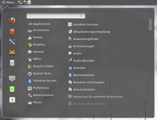
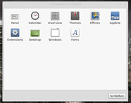
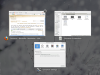
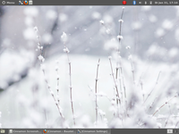
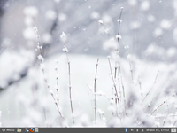
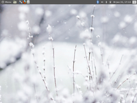

Cinnamon
Dieser Artikel wurde für die folgenden Ubuntu-Versionen getestet:
Ubuntu 16.04 Xenial Xerus
Zum Verständnis dieses Artikels sind folgende Seiten hilfreich:
Cinnamon  (englisch für Zimt) ist eine Abspaltung (Fork) der GNOME Shell. Cinnamon wurde von Entwicklern der (teilweise) auf Ubuntu basierenden Distribution Linux_Mint ins Leben gerufen. Da die GNOME-Entwickler ein völlig neues Bedienkonzept des GNOME-Desktops mit GNOME 3 umsetzten, entschieden sich die Linux-Mint-Entwickler für eine Abspaltung der GNOME Shell, die sich optisch an das Bedienkonzept und das Layout an GNOME 2.32 anlehnt.
(englisch für Zimt) ist eine Abspaltung (Fork) der GNOME Shell. Cinnamon wurde von Entwicklern der (teilweise) auf Ubuntu basierenden Distribution Linux_Mint ins Leben gerufen. Da die GNOME-Entwickler ein völlig neues Bedienkonzept des GNOME-Desktops mit GNOME 3 umsetzten, entschieden sich die Linux-Mint-Entwickler für eine Abspaltung der GNOME Shell, die sich optisch an das Bedienkonzept und das Layout an GNOME 2.32 anlehnt.
Cinnamon nutzt eine eigene Fensterverwaltung namens Muffin, die ebenfalls ein Fork der GNOME-Shell-Fensterverwaltung Mutter ist. Muffin vereint Elemente von Mutter und Metacity. Obwohl das Projekt relativ jung ist, stehen bereits mehrere klassische Desktop-Layouts und einfach zu bedienende Konfigurationswerkzeuge zur Verfügung. Im Oktober 2013 ist die Version 2.0 erschienen  , die nun nicht mehr von den ursprünglichen GNOME-Bibliotheken bzw. -Komponenten abhängig ist.
, die nun nicht mehr von den ursprünglichen GNOME-Bibliotheken bzw. -Komponenten abhängig ist.
Installation¶
Cinnamon ist erst ab Utopic 14.10 in den offiziellen Paketquellen enthalten. Folgendes Paket muss installiert werden [1]:
cinnamon (universe)
 mit apturl
mit apturl
Paketliste zum Kopieren:
sudo apt-get install cinnamon
sudo aptitude install cinnamon
Optional kann der Dateimanager Nemo als Ersatz für Nautilus genutzt werden:
nemo (universe)
mit apturl
Paketliste zum Kopieren:
sudo apt-get install nemo
sudo aptitude install nemo
PPA¶
Ubuntu 14.04¶
Eine ältere Cinnamon-Version (2.8) kann über ein "Personal Packages Archiv" (PPA) [2] installiert werden.
Adresszeile zum Hinzufügen des PPAs:
ppa:tsvetko.tsvetkov/cinnamon
Hinweis!
Zusätzliche Fremdquellen können das System gefährden.
Ein PPA unterstützt nicht zwangsläufig alle Ubuntu-Versionen. Weitere Informationen sind der  PPA-Beschreibung des Eigentümers/Teams tsvetko.tsvetkov zu entnehmen.
PPA-Beschreibung des Eigentümers/Teams tsvetko.tsvetkov zu entnehmen.
Damit Pakete aus dem PPA genutzt werden können, müssen die Paketquellen neu eingelesen werden.
Nach dem Aktualisieren der Paketquellen erfolgt die Installation wie oben angegeben.
Ubuntu 16.04¶
Ein PPA für Ubuntu 16.04 oder neuer, dass die aktuelle Cinnamon-Version enthält.
Adresszeile zum Hinzufügen des PPAs:
ppa:embrosyn/cinnamon
Hinweis!
Zusätzliche Fremdquellen können das System gefährden.
Ein PPA unterstützt nicht zwangsläufig alle Ubuntu-Versionen. Weitere Informationen sind der PPA-Beschreibung des Eigentümers/Teams embrosyn zu entnehmen.
Damit Pakete aus dem PPA genutzt werden können, müssen die Paketquellen neu eingelesen werden.
Bedienung¶
Um Cinnamon zu verwenden, muss man es beim Anmelden im Displaymanager auswählen. Wie das praktisch funktioniert, ist im Artikel LightDM beschrieben.
Die Bedienung von Cinnamon gestaltet sich größtenteils intuitiv. Sie weicht jedoch in einigen Punkten von der GNOME Shell ab: Im Gegensatz zur GNOME Shell gibt es keine Aktivitäten-Ansicht mehr. Bewegt man die Maus in die linke obere Ecke, erhält man nur eine Übersicht der geöffneten Fenster. Zudem kann man diese "Hot Corner" ("Heiße Ecken") auch deaktivieren.
|  |
| Hauptmenü |
|  |
| Einstellungen |
|  |
| Übersichtsmodus |
Konfiguration¶
Cinnamon hat gegenüber der GNOME Shell ein zusätzliches Konfigurationswerkzeug. Dieses lässt sich über das Werkzeug-Symbol im Panel oder über "Menu → Einstellungen → Cinnamon Settings" aufrufen. Dort kann man Einstellungen zum Übersichtsmodus, zu Effekten, Themes, Applets, Extensions, dem Kalender und anderen Dingen vornehmen. Ab Version 1.3 wurde in dieses Konfigurationswerkzeug auch die Funktionen des "Gnome Tweak Tool" integriert. Weitere Einstellungen lassen sich mit den "Systemeinstellungen" der GNOME Shell unter "Menu → Systemwerkzeuge → Systemeinstellungen" tätigen.
Desktoplayout¶
Cinnamon bietet von Haus aus drei verschiedene Layouts zur Auswahl:
|  |
| Klassisch |
|  |
| Traditionell |
|  |
| Flipped |
Themes, Applets und Erweiterungen¶
Cinnamon ist aufgrund seiner Fensterverwaltung Muffin inkompatibel zu GNOME-Shell-Themes und -Erweiterungen. Auf der Cinnamon-Homepage werden aus diesem Grund direkt für Cinnamon geschriebene und portierte Designs (Themes), Applets und Erweiterungen (Extensions) angeboten. Auf der Cinnamon-Homepage ist ebenfalls eine Anleitung zu finden, die beschreibt, wie man eigene Cinnamon-Applets erstellt.
Problembehebung¶
Cinnamon ist ein recht junges Projekt. Deswegen kann es durchaus zu bisher unbekannten Fehlern und Problemen kommen. Ab Cinnamon 1.4 können einige Probleme über das "Cinnamon Einstellungen Panel Applet" behoben werden.
Einstellungen zurücksetzen¶
Wenn davon auszugehen ist, dass eine bestimmte Einstellung (z.B. ein bestimmtes Theme) Probleme verursacht, so kann man mit Hilfe von gsettings die Einstellungen auf die Standardwerte zurücksetzen. Dazu muss folgender Befehl in ein Terminal-Fenster [3] eingegeben werden:
gsettings reset-recursively org.cinnamon
Schwarzer Hintergrund in Systemsteuerung¶
Sollten einzelne Dialoge in der Systemsteuerung von Cinnamon einen schwarzen Hintergrund haben, kann das Problem mit den Themes durch folgenden Befehl für den Benutzer gelöst werden (Quelle: https://github.com/linuxmint/Cinnamon/issues/2771):
gsettings set com.canonical.desktop.interface scrollbar-mode normal
Compiz¶
Da Cinnamon die Fensterverwaltung Muffin nutzt, ist es nicht möglich, es zusammen mit Compiz zu verwenden. Der Start von Compiz Fusion (z.B. durch das Fusion Symbol) verursacht einen Absturz.
Links¶
Cinnamon Spices
- Themes, Applets, Desklets und ErweiterungenQuellcode
und Fehler melden
MATE - weitere Abspaltung, die nicht nur optisch wie GNOME 2 aussieht
- Erstellt mit Inyoka
-
 2004 – 2017 ubuntuusers.de • Einige Rechte vorbehalten
2004 – 2017 ubuntuusers.de • Einige Rechte vorbehalten
Lizenz • Kontakt • Datenschutz • Impressum • Serverstatus -
Serverhousing gespendet von